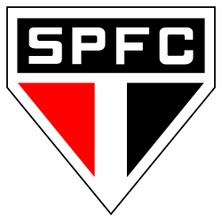
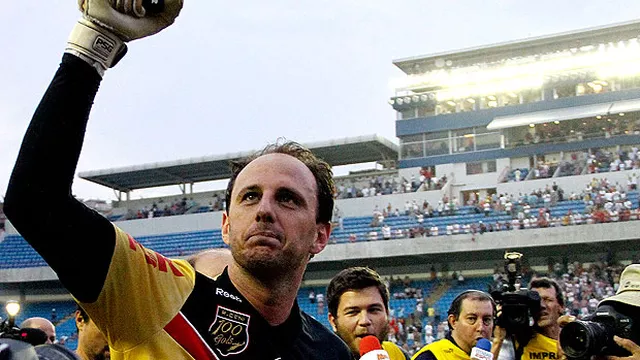

Cezar Vitor Leite Junior
Olá! Meu nome é Cezar, sou natural de Pouso Alegre - MG! Tenho 19 anos, sou formado pelo
IFSULDEMINAS no curso técnico em informática e atualmente curso sistemas de informação na UNIVAS!
Sou apaixonado por tecnologia, video-games e futebol! No momento, também sou estagiário do IFSULDEMINAS, além de bolsista do projeto EJA/EPT! Seja bem-vindo a minha página! 👨🏻💻
Sou apaixonado por tecnologia, video-games e futebol! No momento, também sou estagiário do IFSULDEMINAS, além de bolsista do projeto EJA/EPT! Seja bem-vindo a minha página! 👨🏻💻
Quase joguei futebol pela portuguesa! Apenas não fui na peneira pois quebrei o braço!
Hobby
Sobre o meu hobby favorito, não poderia ser algo diferente do que o Futebol e o São Paulo Futebol Clube.
Nasci em berço são-paulino graças ao meu pai e minha mãe. Desde bebê eles me colocavam para assistir os jogos
junto a eles, comemoravam comigo a cada gol e a cada título (Brasileirões 06-07-08).
Mas a minha primeira lembrança no futebol se dá no dia 27/03/2011. São Paulo x Corinthians na Arena Barueri válido pelo campeonato paulista daquele ano. Assisti o jogo na Band, na casa da minha vó, em Nepomuceno. São paulo saiu na frente com gol de Dagoberto no primeiro tempo (Não lembro do gol, mas sei que foi ele que fez). No segundo tempo, após uma falta em cima do Fernandinho nos primeiros 10 minutos, todo o estádio veio abaixo gritando "Rogério, Rogério"! E lá foi ele, bater a falta que o consegrou como o primeiro goleiro a fazer 100 gols na história do futebol! Incrível, essa memória jamais irá sair da minha mente! No fim, ganhamos aquele jogo pelo placar de 2x1!
Inclusive, essa memória fez eu querer, durante muitos anos, ser goleiro de futebol e seguir os passos do M1TO. Infelizmente, a vida não me levou para esses caminhos e eu estou aqui, escrevendo esse texto!
Mas a minha primeira lembrança no futebol se dá no dia 27/03/2011. São Paulo x Corinthians na Arena Barueri válido pelo campeonato paulista daquele ano. Assisti o jogo na Band, na casa da minha vó, em Nepomuceno. São paulo saiu na frente com gol de Dagoberto no primeiro tempo (Não lembro do gol, mas sei que foi ele que fez). No segundo tempo, após uma falta em cima do Fernandinho nos primeiros 10 minutos, todo o estádio veio abaixo gritando "Rogério, Rogério"! E lá foi ele, bater a falta que o consegrou como o primeiro goleiro a fazer 100 gols na história do futebol! Incrível, essa memória jamais irá sair da minha mente! No fim, ganhamos aquele jogo pelo placar de 2x1!
Inclusive, essa memória fez eu querer, durante muitos anos, ser goleiro de futebol e seguir os passos do M1TO. Infelizmente, a vida não me levou para esses caminhos e eu estou aqui, escrevendo esse texto!
Clubes que eu simpatizo/torço
- Pouso Alegre
- Barcelona
- Arsenal
- Milan
- Ajax

